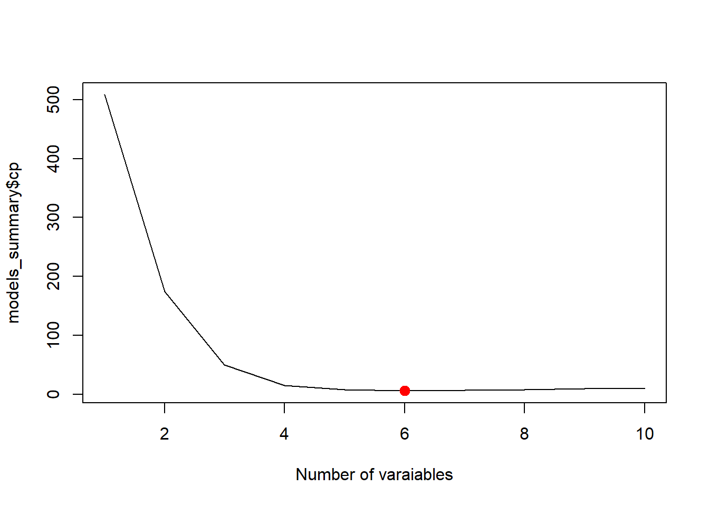
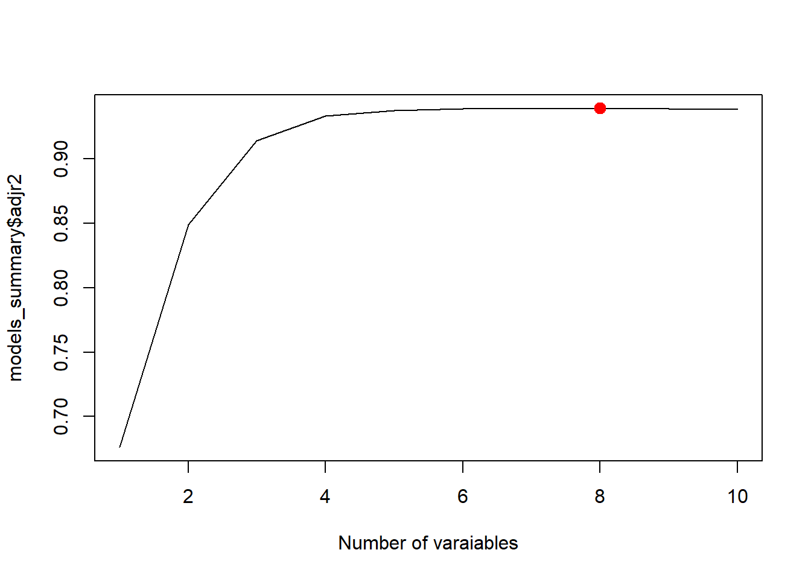
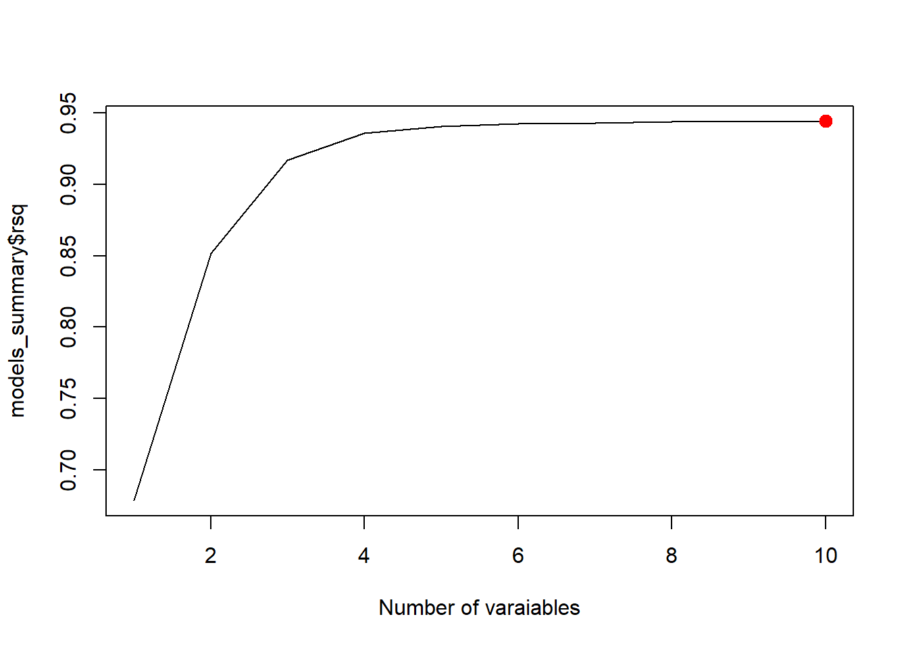
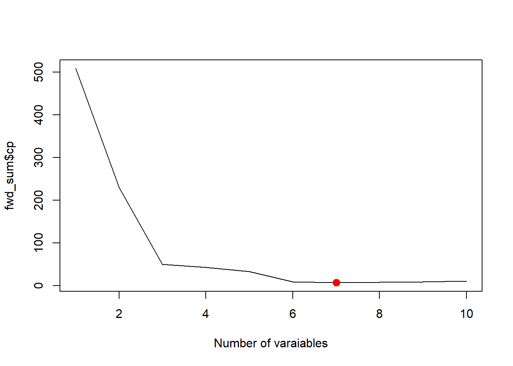

set.seed(123)
n <- 30
x1 <- runif(n, 1, 10)
x2 <- runif(n, 1, 10)
y <- 20 + 5 * x1 - 4 * x2 + rnorm(n, 0, 5)
fit <- lm(y ~ x1 + x2)
AIC(fit)[1] 177.6671\[ \require{physics} \require{braket} \]
\[ \newcommand{\dl}[1]{{\hspace{#1mu}\mathrm d}} \newcommand{\me}{{\mathrm e}} \newcommand{\argmin}{\operatorname{argmin}} \]
$$
$$
\[ \newcommand{\pdfbinom}{{\tt binom}} \newcommand{\pdfbeta}{{\tt beta}} \newcommand{\pdfpois}{{\tt poisson}} \newcommand{\pdfgamma}{{\tt gamma}} \newcommand{\pdfnormal}{{\tt norm}} \newcommand{\pdfexp}{{\tt expon}} \]
\[ \newcommand{\distbinom}{\operatorname{B}} \newcommand{\distbeta}{\operatorname{Beta}} \newcommand{\distgamma}{\operatorname{Gamma}} \newcommand{\distexp}{\operatorname{Exp}} \newcommand{\distpois}{\operatorname{Poisson}} \newcommand{\distnormal}{\operatorname{\mathcal N}} \newcommand{\distunif}{\operatorname{Unif}} \]
When we build a multiple regression model, we often begin with many possible predictors. The main question is: which variables should be included in the model?
This chapter introduces two systematic methods for screening variables:
These methods are intended to help identify the most important predictors before the more careful model-building phase begins.
Variable selections can be treated as a model comparison process. Therefore we need to discuss criteria on comparing models.
When talking about approximation ability, some tend to use MSE. This is very similar to \(R^2\) and \(R_a^2\) since they are computed using MSE.
The Akaike Information Criterion (AIC) is a statistical metric used to evaluate the performance of a model. It balances model fit (goodness of fit) with complexity to avoid over or underfitting. Lower AIC values indicate a better, more efficient model.
A common formula is
\[ AIC = -2 L + 2k, \]
where \(L\) is the likelihood of the fitted model and \(k\) is the number of estimated parameters. The first term rewards good fit, while the second term penalizes model complexity. In the case of linear regression, AIC is \[ AIC=n\log\frac{SSE}{n}+2k \] where \(SSE\) is the sum of squared errors of the model, \(n\) is the number of observations and \(k\) is the number of estimated predictors.
AIC can be treated as adjusting the training error with a penalty term to provide an unbiased estimate of the test error.
AIC is derived as an estimate of expected out-of-sample prediction error, measured via Kullback–Leibler (KL) divergence.
The \(k\) is AIC is the number of estiamted parameters. In the case of MLR, all parameters that have to be estimated include all \(\beta\)’s as well as the variance of the error term \(\sigma^2\).
Therefore if there are \(p\) predicator, \(k\) is usually \(p+2\).
Example 12.1
set.seed(123)
n <- 30
x1 <- runif(n, 1, 10)
x2 <- runif(n, 1, 10)
y <- 20 + 5 * x1 - 4 * x2 + rnorm(n, 0, 5)
fit <- lm(y ~ x1 + x2)
AIC(fit)[1] 177.6671We can compare it with the manual calculation.
sse <- anova(fit)["Residuals", "Sum Sq"]
p <- 2
k <- p + 2
aic_manual <- n * log(sse / n) + n * (1 + log(2 * pi)) + 2 * k
aic_manual[1] 177.6671Based on the formula \[ AIC=n\log\qty(\frac{SSE}n)+2k+C, \] there might be some variations. Consider the Taylor polynomial expansion of \(\log x\) at \(x_0\): \[ \log x\approx \log x_0+\frac1{x_0}(x-x_0)=\log x_0-1+\frac x{x_0}. \] Let \(x_0=\hat\sigma^2\). We have \[ \begin{split} \frac{AIC}n&\sim \log\qty(\frac{SSE}n)+\frac{2k}n\\ &\approx \log \hat\sigma^2-1+\frac1{\hat\sigma^2}\frac{SSE}{n}+\frac{2k}n\\ &=\frac{1}{\hat\sigma^2}\frac1n\qty(SSE+2k\hat\sigma^2)+C. \end{split} \] Therefore if we ignore the added constant \[ \frac{\hat\sigma^2}n AIC\approx \frac1n \qty(SSE + 2k\hat\sigma^2). \]
When we treat both \(\hat\sigma^2\) and \(n\) as constants that are approximately irrevalent to the model, we have may have the relation \[ AIC\propto \frac1n \qty(SSE + 2k\hat\sigma^2). \tag{12.1}\] This is the definition of AIC in some references [1].
Mallows’ \(C_p\) is a criterion for comparing subset regression models. It balances goodness of fit and model complexity, with the goal of estimating prediction error. For a candidate subset model with \(p\) parameters (including the intercept), Mallows’ \(C_p\) is defined as \[ C_p=\frac{SSE_p}{\hat\sigma^2}-(n-2p), \]
where:
How to interpret it:
Example 12.2
Model B is usually preferred. Its \(C_p\) is small and very close to \(p=5\), which suggests that the model is capturing the important predictors without too much bias. Model A has a much larger \(C_p\) than \(p=3\), so it likely leaves out useful variables.
Example 12.3
set.seed(123)
n <- 30
x1 <- runif(n, 1, 10)
x2 <- runif(n, 1, 10)
y <- 20 + 5 * x1 - 4 * x2 + rnorm(n, 0, 5)
fit <- lm(y ~ x1 + x2)fit_full <- lm(y ~ x1 + x2)
sigma2_hat <- summary(fit_full)$sigma^2 # MSE_full
fit_sub <- lm(y ~ x1)
SSE_p <- sum(residuals(fit_sub)^2)
p <- length(coef(fit_sub))
Cp <- SSE_p / sigma2_hat - (n - 2 * p)
Cp[1] 161.0685\(C_p\) also has other formats. Rewrite its formula. Since \[ \frac1n\hat\sigma^2(C_p+n)=\frac1n\hat\sigma^2\qty(\frac{SSE_p}{\hat\sigma^2}-n+2p)=\frac{1}n\qty(SSE_p+2p\hat\sigma^2), \] this shows that \(C_p\) corresponds to \[ \text{training error + penality for model size.} \] Therefore some reference uses this formula to define \(C_p\) [1]: \[ C_p=\frac1n(SSE+2p\hat\sigma^2). \]
Thus, comparing to Equation 12.1, \(C_p\) and AIC are equivalent up to a constant scaling factor, and they rank models in essentially the same way.
From this perspective, \(C_p\) can be viewed as the training error SSE plus a penalty term \(2p\hat\sigma^2\) that accounts for model complexity. More importantly, under the standard linear model assumptions, this adjustment corrects for the optimism of the training error, so that \(C_p\) serves as an approximately unbiased estimator of the expected prediction error on new responses (at the same design points \(X\)). In this sense, \(C_p\) estimates prediction error by adjusting the in-sample fit.
Thus, if \(p\) counts regression parameters, AIC uses \(k = p + 1\).
The difference between \(C_p\) and AIC is only an additive constant across models. Therefore, when comparing models, these differences do not affect ranking, as long as a consistent definition is used.
PRESS stands for prediction sum of squares. It measures how well a model predicts new observations by using leave-one-out prediction errors.
For each observation:
Then add all these squared prediction errors:
\[ PRESS = \sum_{i=1}^n (y_i-\hat y_{(i)})^2, \]
where \(\hat y_{(i)}\) is the predicted value for observation \(i\) from the model fit without observation \(i\).
Interpretation:
Example 12.4
Then Model B is preferred for prediction, because its leave-one-out prediction errors are smaller overall.
Example 12.5 We still use this generated dataset as an example.
set.seed(123)
n <- 30
x1 <- runif(n, 1, 10)
x2 <- runif(n, 1, 10)
y <- 20 + 5 * x1 - 4 * x2 + rnorm(n, 0, 5)
dat <- data.frame(x1 = x1, x2 = x2, y = y)y_i <- numeric(n)
for (i in 1:n) {
fit_i <- lm(y ~ x1 + x2, data = dat[-i, ])
y_i[i] <- predict(fit_i, newdata = dat[i, ])
}
press_manual <- sum((y - y_i)^2)
press_manual[1] 600.1586We could use olsrr::ols_press to compute PRESS.
library(olsrr)
ols_press(fit)[1] 600.1586So in practice:
Stepwise regression is a variable screening procedure that builds a model by repeatedly:
At each step, the procedure examines statistical significance using a \(t\)-test (or the equivalent partial \(F\)-test) for individual regression coefficients.
A common stepwise procedure works like this:
A variable should meet certain criteria to enter or remove. The most obvious one is that whether it is significant, or whether its p-value is smaller than \(\alpha\) or not. However, in order to make the process more flexible, this threshold is modified to be 2 numbers.
Stepwise regression is often described as an objective screening method, but it has important limitations.
The method covered here is the traditional p-value based stepwise regression. There are other versions that will be covered later.
Stepwise regression is closely related to two other variable screening strategies.
So stepwise selection combine both ideas:
In R, we could use olsrr::ols_step_both_p to perform the stepwise regression.
Example 12.6
The dataset contains 10 predictors and 1 response variable.
dat <- read.csv("EXAMPLE.csv")
head(dat) Y X1 X2 X3 X4 X5
1 -0.6406728 -0.1209513 1.17646990 -0.1514330 -1.2871958 0.6182297
2 5.1725031 0.5396450 -0.42121192 0.2735671 1.1178858 0.3563449
3 12.1968874 4.1174166 0.26416383 2.6200560 4.5173601 0.4586812
4 6.0054390 1.1410168 0.61586171 0.5708797 0.5858143 1.4557764
5 -4.9513757 1.2585755 3.76579301 0.7372401 -2.1507964 3.4537146
6 9.3741074 4.4301300 0.02207515 2.8483142 4.7974848 -0.1943406
X6 X7 X8 X9 X10
1 0.86364843 1 1.5592890 -0.1077345 1.3502571
2 1.38051453 1 2.8102558 0.3061704 0.3079401
3 1.96624802 0 3.8688229 1.5013641 0.2052488
4 -0.02839505 1 -1.1758859 3.4701251 0.5376157
5 -2.24905109 0 3.7400101 3.6308339 6.4509591
6 0.03152600 1 -0.5920035 -0.1781105 0.1226518We first use lm to get a 1st order model with all predictors.
fit <- lm(Y ~ ., data = dat)
summary(fit)
Call:
lm(formula = Y ~ ., data = dat)
Residuals:
Min 1Q Median 3Q Max
-5.5084 -1.4323 0.2715 1.2777 5.3139
Coefficients:
Estimate Std. Error t value Pr(>|t|)
(Intercept) 2.83502 0.36971 7.668 7.79e-12 ***
X1 3.52042 1.23907 2.841 0.00537 **
X2 -2.27493 0.46261 -4.918 3.12e-06 ***
X3 -1.33480 1.91949 -0.695 0.48829
X4 -0.54870 0.44742 -1.226 0.22270
X5 -0.26101 0.23459 -1.113 0.26832
X6 -0.48717 0.19110 -2.549 0.01218 *
X7 -0.30888 0.39565 -0.781 0.43668
X8 0.22681 0.11273 2.012 0.04668 *
X9 1.03174 0.11228 9.189 3.02e-15 ***
X10 -1.01666 0.05993 -16.963 < 2e-16 ***
---
Signif. codes: 0 '***' 0.001 '**' 0.01 '*' 0.05 '.' 0.1 ' ' 1
Residual standard error: 2.12 on 109 degrees of freedom
Multiple R-squared: 0.9439, Adjusted R-squared: 0.9388
F-statistic: 183.5 on 10 and 109 DF, p-value: < 2.2e-16There are 10 variables presented. We could use stepwise regression to screen variables.
library(olsrr)
ols_step_both_p(fit)
Stepwise Summary
-------------------------------------------------------------------------
Step Variable AIC SBC SBIC R2 Adj. R2
-------------------------------------------------------------------------
0 Base Model 859.091 864.666 514.908 0.00000 0.00000
1 X4 (+) 724.775 733.138 379.694 0.67889 0.67617
2 X10 (+) 655.057 666.207 309.761 0.82336 0.82034
3 X9 (+) 567.040 580.977 224.277 0.91657 0.91441
4 X6 (+) 561.908 578.633 219.121 0.92138 0.91865
5 X1 (+) 554.575 574.088 212.166 0.92727 0.92408
6 X2 (+) 531.898 554.198 191.940 0.94079 0.93764
7 X4 (-) 531.034 550.547 190.876 0.94022 0.93760
8 X8 (+) 528.669 550.968 189.103 0.94236 0.93930
-------------------------------------------------------------------------
Final Model Output
------------------
Model Summary
---------------------------------------------------------------
R 0.971 RMSE 2.049
R-Squared 0.942 MSE 4.197
Adj. R-Squared 0.939 Coef. Var 81.609
Pred R-Squared 0.936 AIC 528.669
MAE 1.650 SBC 550.968
---------------------------------------------------------------
RMSE: Root Mean Square Error
MSE: Mean Square Error
MAE: Mean Absolute Error
AIC: Akaike Information Criteria
SBC: Schwarz Bayesian Criteria
ANOVA
----------------------------------------------------------------------
Sum of
Squares DF Mean Square F Sig.
----------------------------------------------------------------------
Regression 8233.802 6 1372.300 307.901 0.0000
Residual 503.635 113 4.457
Total 8737.437 119
----------------------------------------------------------------------
Parameter Estimates
-----------------------------------------------------------------------------------------
model Beta Std. Error Std. Beta t Sig lower upper
-----------------------------------------------------------------------------------------
(Intercept) 2.601 0.281 9.253 0.000 2.044 3.158
X10 -0.997 0.058 -0.510 -17.274 0.000 -1.112 -0.883
X9 0.970 0.096 0.276 10.145 0.000 0.780 1.159
X6 -0.519 0.189 -0.063 -2.745 0.007 -0.894 -0.145
X1 2.199 0.128 0.459 17.215 0.000 1.946 2.452
X2 -1.849 0.182 -0.318 -10.173 0.000 -2.209 -1.489
X8 0.229 0.112 0.049 2.046 0.043 0.007 0.450
-----------------------------------------------------------------------------------------From this process, X10 + X9 + X6 + X1 + X2 + X8 are our choice of variables.
There are many issues about the traditional p-value based stepwise regression. Therefore we other other versions of the idea. step in base R is one of them.
There are two major changes here.
step will compare the current model with each model that has one more varialbe, and with each model that has one few variable, and choose the best one for the next iteration. In other words, it perform adding and removing simutanously.Example 12.7
step(fit, direction = "both")Start: AIC=190.78
Y ~ X1 + X2 + X3 + X4 + X5 + X6 + X7 + X8 + X9 + X10
Df Sum of Sq RSS AIC
- X3 1 2.17 491.97 189.31
- X7 1 2.74 492.54 189.45
- X5 1 5.56 495.36 190.14
- X4 1 6.76 496.56 190.42
<none> 489.80 190.78
- X8 1 18.19 507.99 193.16
- X6 1 29.20 519.00 195.73
- X1 1 36.27 526.07 197.35
- X2 1 108.67 598.47 212.83
- X9 1 379.44 869.24 257.62
- X10 1 1293.07 1782.86 343.82
Step: AIC=189.31
Y ~ X1 + X2 + X4 + X5 + X6 + X7 + X8 + X9 + X10
Df Sum of Sq RSS AIC
- X7 1 2.28 494.25 187.87
- X5 1 5.34 497.31 188.61
- X4 1 6.81 498.78 188.96
<none> 491.97 189.31
+ X3 1 2.17 489.80 190.78
- X8 1 18.03 510.00 191.63
- X6 1 30.15 522.13 194.45
- X2 1 108.05 600.02 211.14
- X1 1 159.63 651.60 221.03
- X9 1 383.43 875.40 256.46
- X10 1 1293.71 1785.68 342.01
Step: AIC=187.87
Y ~ X1 + X2 + X4 + X5 + X6 + X8 + X9 + X10
Df Sum of Sq RSS AIC
- X5 1 5.02 499.26 187.08
- X4 1 6.43 500.68 187.42
<none> 494.25 187.87
+ X7 1 2.28 491.97 189.31
+ X3 1 1.71 492.54 189.45
- X8 1 19.07 513.31 190.41
- X6 1 31.52 525.77 193.28
- X2 1 106.22 600.47 209.23
- X1 1 158.18 652.42 219.18
- X9 1 381.30 875.55 254.48
- X10 1 1293.86 1788.11 340.17
Step: AIC=187.08
Y ~ X1 + X2 + X4 + X6 + X8 + X9 + X10
Df Sum of Sq RSS AIC
- X4 1 4.37 503.64 186.12
<none> 499.26 187.08
+ X5 1 5.02 494.25 187.87
+ X7 1 1.95 497.31 188.61
+ X3 1 1.55 497.71 188.70
- X8 1 18.11 517.37 189.35
- X6 1 32.47 531.74 192.64
- X2 1 108.82 608.08 208.74
- X1 1 153.18 652.44 217.19
- X9 1 459.30 958.56 263.35
- X10 1 1289.83 1789.09 338.24
Step: AIC=186.12
Y ~ X1 + X2 + X6 + X8 + X9 + X10
Df Sum of Sq RSS AIC
<none> 503.64 186.12
+ X4 1 4.37 499.26 187.08
+ X5 1 2.96 500.68 187.42
+ X7 1 1.71 501.92 187.71
+ X3 1 1.65 501.99 187.73
- X8 1 18.66 522.29 188.49
- X6 1 33.58 537.22 191.87
- X9 1 458.75 962.38 261.83
- X2 1 461.21 964.84 262.14
- X1 1 1320.77 1824.40 338.58
- X10 1 1329.86 1833.50 339.18
Call:
lm(formula = Y ~ X1 + X2 + X6 + X8 + X9 + X10, data = dat)
Coefficients:
(Intercept) X1 X2 X6 X8 X9
2.6008 2.1985 -1.8487 -0.5195 0.2287 0.9697
X10
-0.9972 If we want to start from y~x1+x2+x3+x4 and to search until x10, we need to first fit a model with 4 variables, and define the upper bound to be 10 variables.
fit_sub <- lm(Y~X1+X2+X3+X4, data=dat)
step(
fit_sub,
scope = list(
lower = ~1,
upper = ~ X1+X2+X3+X4+X5+X6+X7+X8+X9+X10
)
)Start: AIC=381.36
Y ~ X1 + X2 + X3 + X4
Df Sum of Sq RSS AIC
+ X10 1 1594.99 1054.6 272.81
+ X9 1 857.05 1792.5 336.47
+ X5 1 261.55 2388.0 370.89
- X3 1 19.20 2668.8 380.23
- X2 1 37.63 2687.2 381.05
<none> 2649.6 381.36
+ X6 1 35.83 2613.8 381.73
- X1 1 54.95 2704.5 381.82
- X4 1 63.76 2713.3 382.21
+ X7 1 1.97 2647.6 383.27
+ X8 1 0.19 2649.4 383.35
Step: AIC=272.81
Y ~ X1 + X2 + X3 + X4 + X10
Df Sum of Sq RSS AIC
+ X9 1 500.81 553.78 197.51
+ X5 1 91.21 963.39 263.96
+ X6 1 85.10 969.50 264.71
+ X8 1 30.21 1024.39 271.32
- X4 1 6.03 1060.63 271.50
- X3 1 12.04 1066.64 272.17
<none> 1054.60 272.81
+ X7 1 3.87 1050.73 274.37
- X2 1 60.98 1115.58 277.56
- X1 1 73.76 1128.35 278.92
- X10 1 1594.99 2649.59 381.36
Step: AIC=197.51
Y ~ X1 + X2 + X3 + X4 + X10 + X9
Df Sum of Sq RSS AIC
+ X6 1 37.76 516.02 191.04
+ X8 1 24.30 529.49 194.13
- X3 1 2.04 555.83 195.96
- X4 1 6.17 559.95 196.84
<none> 553.78 197.51
+ X7 1 5.52 548.27 198.31
+ X5 1 5.01 548.77 198.42
- X1 1 37.44 591.22 203.36
- X2 1 131.71 685.49 221.12
- X9 1 500.81 1054.60 272.81
- X10 1 1238.75 1792.53 336.47
Step: AIC=191.04
Y ~ X1 + X2 + X3 + X4 + X10 + X9 + X6
Df Sum of Sq RSS AIC
+ X8 1 18.31 497.71 188.70
- X3 1 1.35 517.37 189.35
- X4 1 4.83 520.85 190.16
<none> 516.02 191.04
+ X5 1 4.19 511.83 192.06
+ X7 1 3.40 512.62 192.25
- X1 1 33.44 549.46 196.57
- X6 1 37.76 553.78 197.51
- X2 1 118.51 634.53 213.85
- X9 1 453.48 969.50 264.71
- X10 1 1270.73 1786.75 338.08
Step: AIC=188.7
Y ~ X1 + X2 + X3 + X4 + X10 + X9 + X6 + X8
Df Sum of Sq RSS AIC
- X3 1 1.55 499.26 187.08
- X4 1 4.27 501.99 187.73
<none> 497.71 188.70
+ X5 1 5.18 492.54 189.45
+ X7 1 2.35 495.36 190.14
- X8 1 18.31 516.02 191.04
- X6 1 31.77 529.49 194.13
- X1 1 32.41 530.13 194.28
- X2 1 109.17 606.89 210.50
- X9 1 451.65 949.37 264.20
- X10 1 1289.03 1786.74 340.08
Step: AIC=187.08
Y ~ X1 + X2 + X4 + X10 + X9 + X6 + X8
Df Sum of Sq RSS AIC
- X4 1 4.37 503.64 186.12
<none> 499.26 187.08
+ X5 1 5.02 494.25 187.87
+ X7 1 1.95 497.31 188.61
+ X3 1 1.55 497.71 188.70
- X8 1 18.11 517.37 189.35
- X6 1 32.47 531.74 192.64
- X2 1 108.82 608.08 208.74
- X1 1 153.18 652.44 217.19
- X9 1 459.30 958.56 263.35
- X10 1 1289.83 1789.09 338.24
Step: AIC=186.12
Y ~ X1 + X2 + X10 + X9 + X6 + X8
Df Sum of Sq RSS AIC
<none> 503.64 186.12
+ X4 1 4.37 499.26 187.08
+ X5 1 2.96 500.68 187.42
+ X7 1 1.71 501.92 187.71
+ X3 1 1.65 501.99 187.73
- X8 1 18.66 522.29 188.49
- X6 1 33.58 537.22 191.87
- X9 1 458.75 962.38 261.83
- X2 1 461.21 964.84 262.14
- X1 1 1320.77 1824.40 338.58
- X10 1 1329.86 1833.50 339.18
Call:
lm(formula = Y ~ X1 + X2 + X10 + X9 + X6 + X8, data = dat)
Coefficients:
(Intercept) X1 X2 X10 X9 X6
2.6008 2.1985 -1.8487 -0.9972 0.9697 -0.5195
X8
0.2287 Forward selection, backward elimination, and stepwise regression all build models one variable at a time. None of them guarantees that the best model with a given number of predictors will be found.
Aall-possible-regressions selection, or alternatively named best-subsets regression, is to consider all possible regression models formed from the candidate predictors. The idea is very simple: for each possible model size, search all possible models and identify the best subset according to a chosen criterion by brute force.
Typical criteria contain
In R, we could use leaps::regsubsets to search for the variables.
Example 12.8
library(leaps)
dat <- read.csv("EXAMPLE.csv")models <- regsubsets(Y ~ ., data = dat, nvmax = 10)
models_summary <- summary(models)We could then check the which subset is the best according to different creteria.
best_cp <- which.min(models_summary$cp)
plot(models_summary$cp, xlab = "Number of varaiables", type = "l")
points(best_cp, models_summary$cp[best_cp], col = "red", cex = 2, pch = 20)
best_adjr2 <- which.max(models_summary$adjr2)
plot(models_summary$adjr2, xlab = "Number of varaiables", type = "l")
points(best_adjr2, models_summary$adjr2[best_adjr2], col = "red", cex = 2, pch = 20)
best_rsq <- which.max(models_summary$rsq)
plot(models_summary$rsq, xlab = "Number of varaiables", type = "l")
points(best_rsq, models_summary$rsq[best_rsq], col = "red", cex = 2, pch = 20)
best_rss <- which.min(models_summary$rss)
plot(models_summary$rss, xlab = "Number of varaiables", type = "l")
points(best_rss, models_summary$rss[best_rss], col = "red", cex = 2, pch = 20)
This description follows [1]. The key idea is to approximate best subset selection using a greedy procedure.
Note that this stepwise regression is actually a variation of the best-of-subset method. Therefore its R implementation is done through leaps::regsubsets.
library(leaps)
fit_fwd <- regsubsets(Y ~ ., data = dat, nvmax = 10, method = "forward")
summary(fit_fwd)Subset selection object
Call: regsubsets.formula(Y ~ ., data = dat, nvmax = 10, method = "forward")
10 Variables (and intercept)
Forced in Forced out
X1 FALSE FALSE
X2 FALSE FALSE
X3 FALSE FALSE
X4 FALSE FALSE
X5 FALSE FALSE
X6 FALSE FALSE
X7 FALSE FALSE
X8 FALSE FALSE
X9 FALSE FALSE
X10 FALSE FALSE
1 subsets of each size up to 10
Selection Algorithm: forward
X1 X2 X3 X4 X5 X6 X7 X8 X9 X10
1 ( 1 ) " " " " " " "*" " " " " " " " " " " " "
2 ( 1 ) " " " " " " "*" " " " " " " " " " " "*"
3 ( 1 ) " " " " " " "*" " " " " " " " " "*" "*"
4 ( 1 ) " " " " " " "*" " " "*" " " " " "*" "*"
5 ( 1 ) "*" " " " " "*" " " "*" " " " " "*" "*"
6 ( 1 ) "*" "*" " " "*" " " "*" " " " " "*" "*"
7 ( 1 ) "*" "*" " " "*" " " "*" " " "*" "*" "*"
8 ( 1 ) "*" "*" " " "*" "*" "*" " " "*" "*" "*"
9 ( 1 ) "*" "*" " " "*" "*" "*" "*" "*" "*" "*"
10 ( 1 ) "*" "*" "*" "*" "*" "*" "*" "*" "*" "*"fwd_sum <- summary(fit_fwd)
best_cp <- which.min(fwd_sum$cp)
best_cp[1] 7plot(fwd_sum$cp, xlab='Number of varaiables', type='l')
points(best_cp, fwd_sum$cp[best_cp], col = "red", cex = 2, pch = 20)
Note that regsubsets doesn’t use AIC since AIC and \(C_p\) are essentially the same in the case of linear regression.
Both stepwise regression and best-subsets regression should be used carefully.
You should not abandon:
A statistically selected model is not automatically the right model.
A good way to use these methods is:
So these methods are best viewed as starting points, not final answers.
LASSO is fundamentally different from ordinary least squares (OLS). While OLS focuses on unbiased estimation and supports classical inference (such as confidence intervals and hypothesis tests), LASSO introduces a penalty that shrinks coefficients and can set some of them exactly to zero. This makes LASSO particularly effective for prediction and variable selection, especially in settings with many or highly correlated predictors.
However, because the estimates are biased and the selection process is data-dependent, standard inferential tools (like p-values and standard errors) are no longer valid in the usual sense. For this reason, LASSO is not emphasized in introductory regression courses. Instead, it plays a central role in modern statistical learning, and we will study it in more detail in other courses which focused on prediction and model regularization if there is an opportunity.